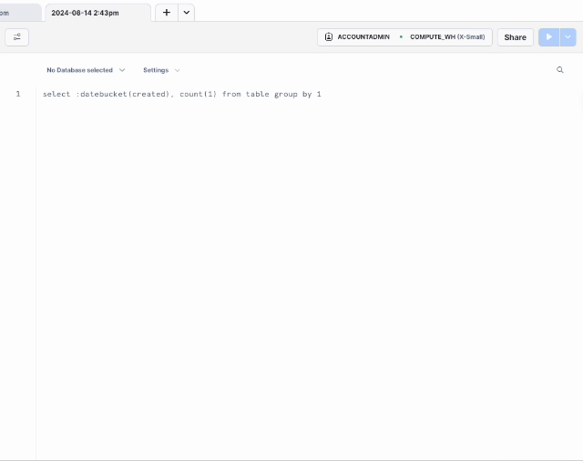

Connect to Snowflake with Key Pair Authentication
Key Pair Authentication setup
-
Open a terminal or command line interface (CLI) on your desktop computer. For Mac navigate to the Launch Pad or use the Spotlight search feature to find the “Terminal”. For Windows use the Start Menu search feature and enter “Command Prompt”. Type the command “pwd” short for “print working directory” to find what directory you are in. Take note of the directory as this will be where your key files are located.
-
Create a Private Key. You have a choice of creating an encrypted or unencrypted Private Key.
Unencrypted Private Key. Run the following command in the CLI.
openssl genrsa 2048 | openssl pkcs8 -topk8 -inform PEM -out precog_key.p8 -nocryptThe name of this Private Key file is precog_key.p8. You will need to upload this key file into the Precog configuration form below.
Encrypted Private Key. Run the following command in the CLI.
openssl genrsa 2048 | openssl pkcs8 -topk8 -inform PEM -out encrypt_precog_key.p8You will be prompted to “Enter Encryption Password”. Save this password in a secure place. If you lose or forget it you will not be able to retrieve it. Type in your password and then retype for verification.
The name of this Private Key file is encrypt_precog_key.p8. You will need to upload this key file into the Precog configuration form below as well as providing the encrypted password.
-
Create a Public Key. In the CLI run the following command using the file name of your encrypted or unencrypted Private Key file, i.e.
precog_key.p8orencrypt_precog_key.p8. This Public Key can be paired with either an encrypted or unencrypted Private Key.openssl rsa -in precog_key.p8 -pubout -out precog_key.pubThe name of this Public Key file is precog_key.pub. Type
head precog_key.pubto read your newly generated private key. The key is the alpha numeric text between the “BEGIN and END” lines. You will need to copy and paste the key into your Snowflake account.
Snowflake setup
- Log into your Snowflake account.
-
Create a new SQL Worksheet. Click on + Create in the top left navigation and then choose SQL Worksheet.

If you are using the Classic Console view then select “Worksheets” from the toolbar at the top and create a new worksheet.
-
Paste the following SQL statements into the new worksheet. A unique and secure password has been generated in the 8th statement. This password is automatically populated into the password field below for your convenience.
CREATE OR REPLACE DATABASE precog; CREATE OR REPLACE ROLE precog; CREATE OR REPLACE SCHEMA precog; CREATE WAREHOUSE precog WITH WAREHOUSE_SIZE = 'XSMALL' WAREHOUSE_TYPE = 'STANDARD' AUTO_SUSPEND = 300 AUTO_RESUME = TRUE; GRANT ALL ON WAREHOUSE precog TO ROLE precog; GRANT ALL ON DATABASE precog TO ROLE precog; GRANT ALL ON ALL SCHEMAS IN DATABASE precog TO ROLE precog; CREATE OR REPLACE USER precog LOGIN_NAME = precog DISPLAY_NAME = precog DEFAULT_WAREHOUSE = precog; GRANT ROLE precog TO USER precog; ALTER USER precog SET default_role=precog; GRANT USAGE ON ALL SCHEMAS IN DATABASE precog TO ROLE precog; GRANT USAGE ON FUTURE SCHEMAS IN DATABASE precog TO ROLE precog; GRANT ROLE precog TO ROLE sysadmin; -
Assign your Public Key in your Snowflake account. Add the following statement to the new worksheet.
ALTER USER precog SET RSA_PUBLIC_KEY=’Your public key here’;Copy your Public Key into the statement between single quotes. Do not include the “BEGIN and END” lines. For example, ALTER USER precog SET RSA_PUBLIC_KEY='MIIBIjANBgkqhkiG9w0B . . .';
-
Click on the Run All option, down-arrow icon in top right corner.
If you are using the Classic Console the above directions will be slightly different. You will enable the “All queries” checkbox and click “Run”.
You should now have a Database, Warehouse, and User named
precog. These values have all been automatically populated in the form below. -
Find your Snowflake Account URL. Click on the account manager option in the bottom left navigation. Click on Account and then in the next panel click on "View account details" Copy your Account/Server URL and paste in the form below.